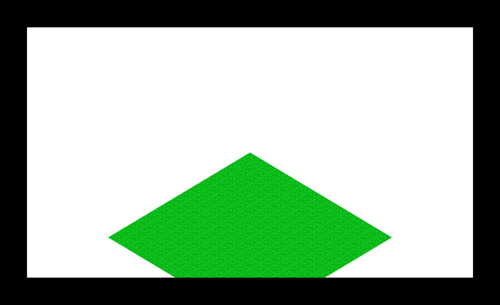
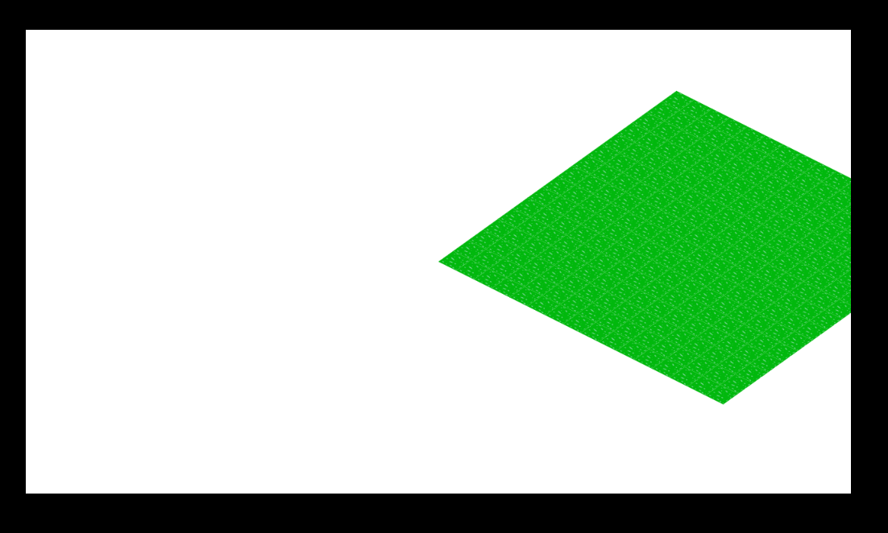

モナドのまほう 第２話『ゲームループとキー入力ができました』
- 第一話 画像が表示できました ←前回
つづきです。
座標変換！👀
前回は画像の読み込みと複数回の描画ができました。ここで急にクォータービューっぽく表示してみたくなった（思いつき）ので、そうしてみます！ translateとかscaleとかrotateとかそういう座標変換の関数をそういう感じに呼びます！ アフィン変換について知らない人はゲームプログラミングの書籍なんかを読んでお勉強してみましょう！
translate { translateX: 1280.0 * 0.5 , translateY: 720.0 * 0.5 } context
scale { scaleX: 1.0, scaleY: 0.6 } context
rotate (45.0 / 180.0 * pi) context
これらの関数について、詳しくはCanvas APIをどうぞ。
save/restore！👮
そして忘れてはいけないのが、コンテキストのsaveとrestore。これを忘れるとゲームループが回るたびに座標変換が蓄積していってわけのわからないことになります。まあまだゲームループも実装していませんけど。もちろんPureScriptからでも問題なくsaveとrestoreを呼ぶことができます。
save context
pure unit -- do something
restore context
でも、これじゃうっかりrestoreを書き忘れるかも……。そんなときはwithContextっていう関数が用意されているので、これを使えば自動的にsaveとrestoreをしてくれるので楽ちん！
withContext context do
pure unit -- do something
saveのあとにこの一段インデントされた部分が実行され、それが終わると勝手にrestoreしてくれます。それでは表示してみましょう。

きっったあああああああああ！😈😈😈 クォータービュー🔸だ！ でも英語ではIsometric projectionっていうそうですよ！
ゲームループとキー入力！👈
静止画を表示しただけではゲームにはなりません。アニメーション、すなわち画面を時間にそって変化させることが必要ですが、そのためにはいわゆるゲームループが必要です。今はとくにゲームライブラリを使っていないので、ゲームループも自作する必要がありますが、この部分はJavaScriptで書きました（血涙）。イベントハンドラを仕掛けたりと多少DOMをいじらなくてはならないのですが、PureScriptの生DOMライブラリは死ぬほど面倒くさくて、はっきり言って使わないほうがよっぽどマシです。でもあんまりガチなUIフレームワークを使うほどではないので、代わりにJavaScriptでゲームループ関連のコードを書いて、それを外部関数インターフェイスを使ってPureScriptから呼び出すことにします。
JavaScript側は適当にこんな感じに。PureScriptから呼び出されるJavaScriptコードはCommonJSモジュールとして書きます。呼び出されたらすぐに内容を実行するのではなく、いったん引数のない関数オブジェクトを返しているのが特徴です。PureScript側からもう一度その関数オブジェクトを呼び出すことで本体が実行されます。
exports.gameloop = function(callback){
return function(){
function next(){
callback();
count += 1;
window.requestAnimationFrame(next);
}
var count = 0;
window.addEventListener("keydown", function(e){
if( ! keyTable.hasOwnProperty(e.keyCode)){
keyTable[e.keyCode] = count;
}
});
window.addEventListener("keyup", function(e){
delete keyTable[e.keyCode];
});
next();
};
};
PureScript側はこんな感じ。
foreign import gameloop :: forall eff . Eff (gameloop :: GameLoop, dom :: DOM | eff) Unit → Eff (dom :: DOM | eff) Unit
この関数gameloopはこんな感じで呼び出します。
gameloop do
withContext context do
translate { translateX: 1280.0 * 0.5 , translateY: 720.0 * 0.5 } context
scale { scaleX: 1.0, scaleY: pitch / 90.0 } context
rotate (45.0 / 180.0 * pi) context
translate { translateX: 36.0 * -2.0 , translateY: 36.0 * -2.0 } context
for (0 .. 9) \y → do
for (0 .. 9) \x → do
drawImage context grass (36.0 * toNumber x) (36.0 * toNumber y)
pure unit
こうすると、gameloopからひとつインデントされた部分がrequestAnimationFrameのタイミングで繰り返し実行されます。これで何度も再描画はされているのですが、何も表示が変わっていないのでアニメーションしているように見えません……😭😭😭
変更可能な領域！👽
さて、PureScriptは純粋関数型プログラミング言語であり、すべての式が純粋です。噂には聞いたことがあるかもしれませんが、次のようにして変数を直接書き換えて状態を変更することができません。
let counter = 0
gameloop do
counter = counter + 1 -- こういうことはできない！
なんてこった……😦 状態を変えられないとか、純粋関数型な言語じゃゲームにならないじゃないか……もう駄目だ……お終いだ……😰 いや！ まだだ！ まだ**Ref**がある！ 使い方は簡単で、newRefで変更可能な状態を作り、readRefで状態の読み取り、writeRefやmodifyRefで状態の書き換えができます。
ref ← newRef 0 -- 可変な領域を作成！ 初期値は0！
gameloop do
count ← readRef ref -- 領域から値の読み取り！
writeRef ref (count + 1) -- 領域への値の書き込み
これで、ゲームループが回るたびにカウンターがひとつずつ増えていきます。状態を読み取る前にreadRefを呼んで領域から現在の状態を取り出さなくてはならないのがちょっと面倒ですが、三匹の豚精神で乗り切ります。逆にいえば、DOMや外部のライブラリが持つ状態を除けば、アプリケーション自身の状態といえるものはこのrefの状態だけであり、それ以外にはまったく状態を持たないのが保証されるので、アプリケーションの状態の管理がとても楽です。なんかゲームの状態がおかしくなったなあと思ったらこのrefの中だけ確認すればいいのです。
それでは、さっきgameloop関数と一緒に定義したgetKey関数で、キーの状態を取得し、現在の状態に反映させます。それからその状態を使って画面を再描画します。試しに、変更されている状態を、座標変換の回転量に使いましょうか。実行させてみるとこうなります。

あああああああ！ キー操作でくるくる回っているのに、静止画だから伝わらない！ 詳しくは実際に動かしてみてください。
画像の読み込み(二回目)！📷
現状の方法だと、読み込む画像が増えるたびにネストがどんどん増えていってしまいます。
main = do
withImage "grass.png" \grass → do
withImage "foo.png" \foo → do
withImage "bar.png" \bar → do
pure unit
これはキモいので、非同期処理モナドという謎の技術を使ってこれを平坦に書けるようにします(なお、PureScriptの非同期処理モナドについては、こちらで筆者も紹介しています)。これを使ってloadImageという関数を定義すると、こんなふうに書けるようになります。
main = launchAff do
grass ← loadImage "grass.png"
foo ← loadImage "foo.png"
bar ← loadImage "bar.png"
pure unit
よし！🌞 これでネストが増えていかない！🌵 え？ なんでこういうふうに書けるのかって？ そういう難しいことをあんまり気にしちゃだめです！
全体像!🐔
今日のところはここまでにしておいてやる！👮 キャンバスを取得するところとかもちょっとリファクタリングして、こんなかんじです(再現)。
main = launchAff do
grass ← loadImage "grass.png"
canvas ← getCanvas "canvas"
liftEff $ runST do
context ← getContext2D canvas
stateRef ← newSTRef (0 :: Int)
gameloop do
state ← readSTRef stateRef
let zeroOrOne key = maybe 0 (const 1) <$> getKey key
rx ← (-) <$> zeroOrOne 68 <*> zeroOrOne 65
writeSTRef stateRef (state + rx)
clearRect context { x: 0.0, y: 0.0, w: 1280.0, h: 720.0 }
withContext context do
translate { translateX: 1280.0 * 0.5 , translateY: 720.0 * 0.5 } context
scale { scaleX: 1.0, scaleY: 0.6 } context
rotate (45.0 / 180.0 * pi) context
for_ (0 .. (chunkSize - 1)) \y → do
for_ (0 .. (chunkSize - 1)) \x → do
drawImage context grass (36.0 * toNumber x) (36.0 * toNumber y)